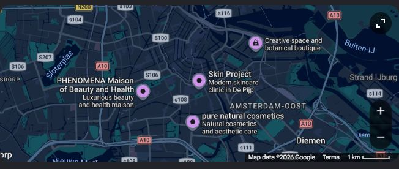

Conversation 909
Personal Aesthetics
Prompt 1 · You
personally pleasing aesthetics
Response 1 · Google AI Mode
Personally pleasing aesthetics can mean different things to everyone, but if you are looking to treat yourself in Amsterdam, several top-tier local spaces specialize in personalized, tailor-made aesthetic treatments, custom skincare, and beautiful environments designed to make you feel your best. From deeply customized facials to natural-looking skin therapy and creative design studios, these spots prioritize your unique preferences in highly curation-focused environments.

Tailored Skincare & High-End Wellness
- PHENOMENA Maison of Beauty and Health: I highly recommend this elegant and stylish oasis if you want a complete escape where every detail is beautiful and curated. The international team at PHENOMENA focuses on an unlimited-age, mindful approach to beauty, offering bespoke hair coloring, relaxing massages, and exceptional facials alongside delicious coffee.
- Skin Project: If your definition of a pleasing aesthetic is a healthy, glowing complexion, Skin Project is a fantastic choice. Their university-trained skin therapists specialize in advanced laser treatments, microneedling, and peels. Visitors love that they take a safe, collaborative approach to your skin goals without ever pushing unnecessary extras or injectables.
- pure natural cosmetics: For a holistic, soul-nourishing beauty experience, pure natural cosmetics offers bespoke treatments that cater deeply to sensitive skin. Their signature facials and pregnancy massages use gentle, premium organic products tailored completely to your immediate physical needs within a deeply calming ambiance.
- Face & Body Boutique: This high-end clinic is perfect if you are looking for subtle, elegant enhancements and advanced skin tightening treatments like Ultherapy or specialized vitamin infusions. The practitioners at Face & Body Boutique are widely praised for their meticulous, artistic eyes and customized treatment paths that deliver natural, long-lasting results.
Creative Spaces & Artful Details
pansy 🌸: If you are seeking visual inspiration and a pleasing aesthetic in object form rather than skincare, do not miss pansy. This vibrant, independent shop and studio features beautiful handmade ceramics, zines, prints, and custom artwork from local makers. It is an incredibly warm, bubbly, and creative neighborhood gem that also hosts seasonal hands-on craft workshops.
Are you looking for a specific type of aesthetic treatment (like facials, permanent makeup, or hair styling), or are you looking for interior design and lifestyle inspiration to curate your own personal aesthetic? Let me know what you have in mind so I can point you to the perfect spot!
Source links preserved from this response
- Terms
https://www.google.com/intl/en-NL/help/terms_maps/ - PHENOMENA
http://phenomenamaison.com/ - Skin Project
https://www.skinproject.nl/ - pure natural cosmetics
https://www.purecosmetics.info/ - pansy
http://www.pansy-shop.com/ - Face & Body Boutique
https://facebodyboutique.com/